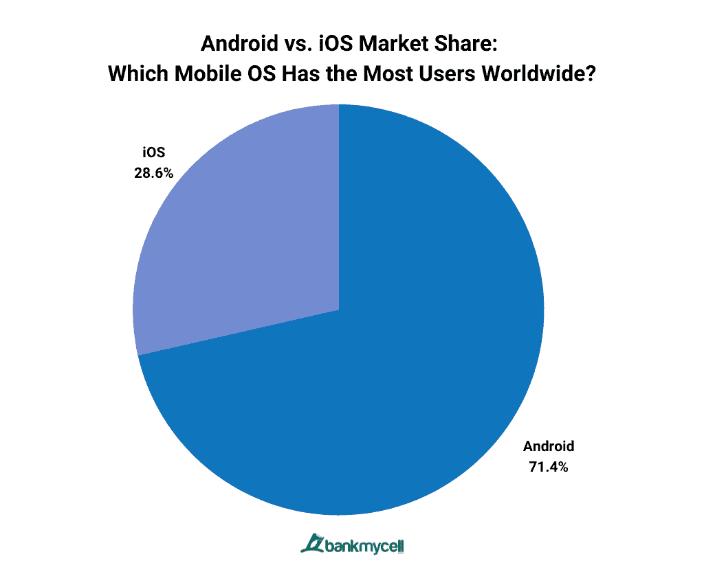
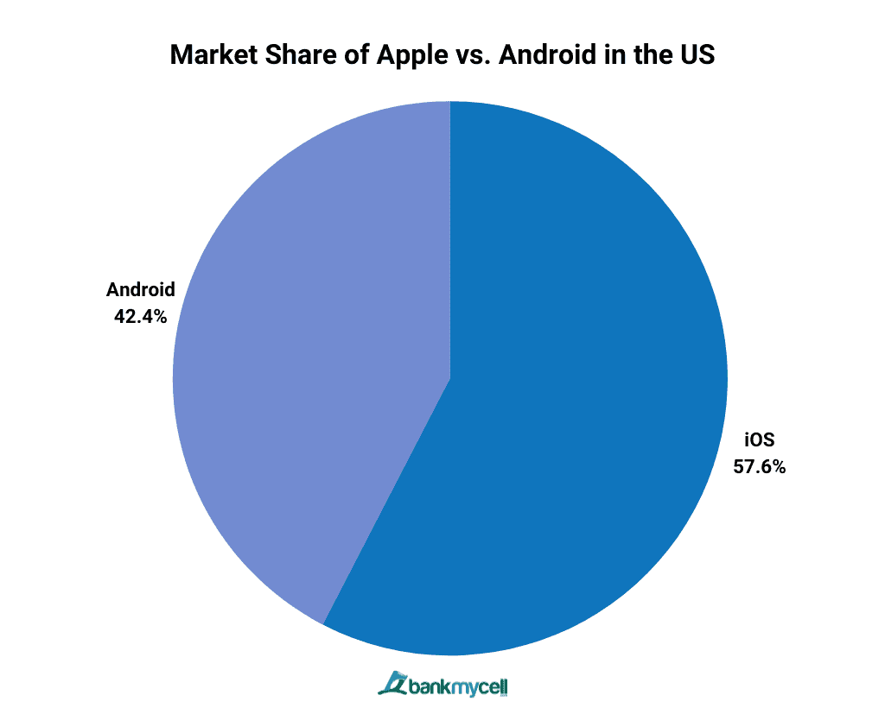

Image source: https://www.bankmycell.com/blog/android-vs-apple-market-share/
Although it might seem surprising, the worldwide market for phones heavily leans towards the Android operating system. This is because Android is an open-source software, which means manufacturers all over the world can produce phones with the operating system. This, coupled with the fact that Android tends to offer a wider (and cheaper) range of products than Apple does, means that Android has spread across the world much more quickly than the IPhone.

Image source: https://www.bankmycell.com/blog/android-vs-apple-market-share/
Even though Android has spread across most of the world, Apple holds the majority of the market share in the United States. This is because people in the U.S. are more willing to pay the premium for Apple's quality products, which is where they really shine. With Apple's seamless integration between their products, it is easier to get into Apple's ecosystem and be able to use all of their products without issue. Apple is also considered generally safer than Android, because its App Store is curated. All of these factors lead to high brand loyalty, which is why Apple has continued to grow so powerfully in the U.S.